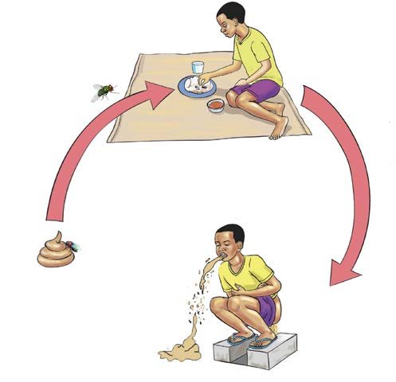

na nzi. Nzi anaweza kubeba vimelea kutoka kwenye matapishi au kinyesi chenye vimelea kwenda kwenye chakula au maji. Kielelezo namba 2 kinaonesha uenezwaji wa ugonjwa wa kipindupindu.
Nzi aliyebeba vimelea vya ugonjwa akielekea kwenye chakula
Kinyesi chenye vimelea vya ugonjwa wa kipindupindu

Kielelezo namba 2: Uenezwaji wa ugonjwa wa kipindupindu
Mtu aliyeambukizwa ugonjwa wa kipindupindu
Dalili za kipindupindu
Zifuatazo ni dalili za ugonjwa wa kipindupindu:
(a)
Kuharisha na kutapika mfululizo;
(b)
Kutoa kinyesi chenye rangi kama ya maji yaliyosafishiwa mchele;
(c)
Mkojo kuwa na rangi ya manjano; na
(d)
Kulegea mwili na kuishiwa nguvu.
Namna ya kuzuia kipindupindu
Tunapaswa kuishi katika mazingira safi na kudumisha usafi. Tunashauriwa kula chakula na kunywa maji safi na salama. Aidha, ni muhimu kutumia choo wakati wa kujisaidia. Pia,